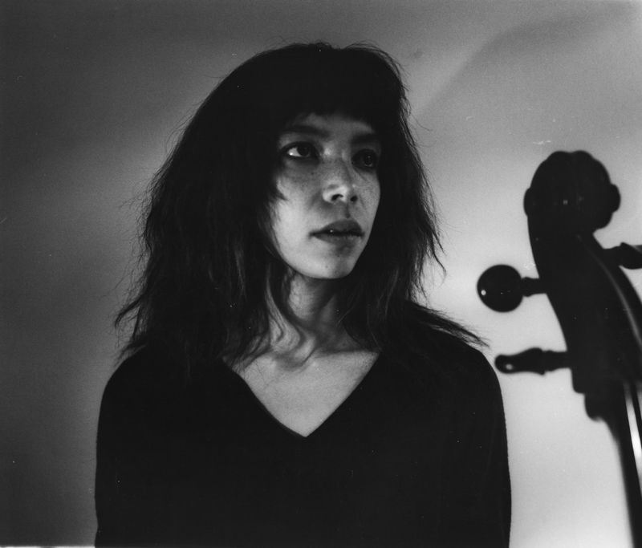
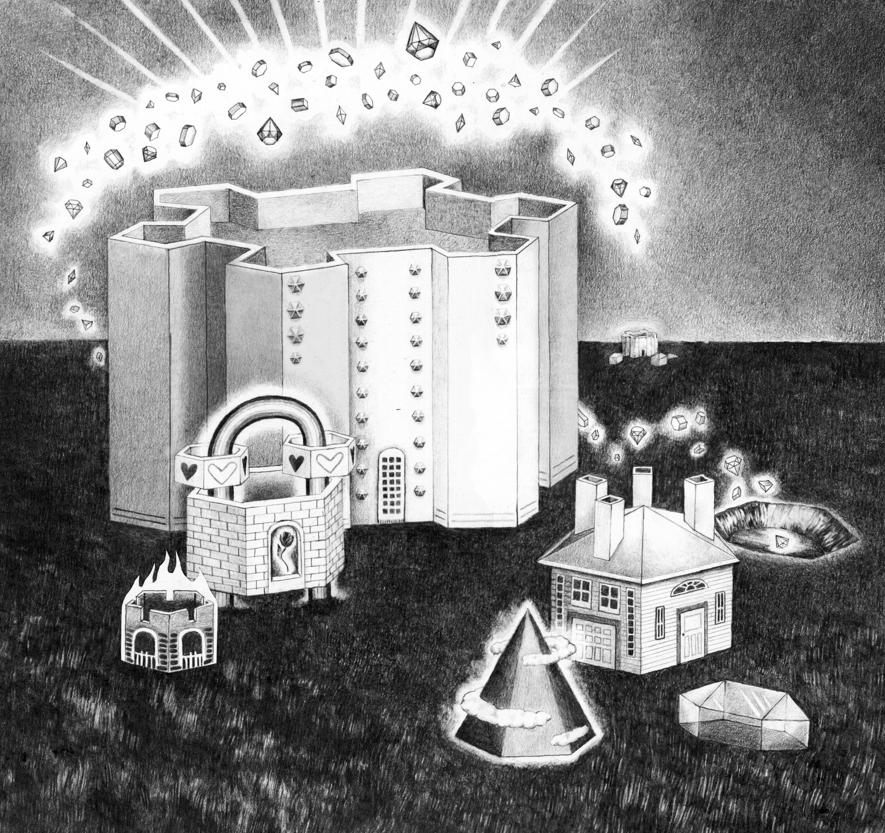

Dorothy Carlos is an experimental cellist working in performance and sound installation. Her work heavily utilizes amplification and digital manipulation to challenge conventional ways of playing the cello. She is interested in electronics as an opportunity to construct alternate realities and seeks to obfuscate the line between acoustic and synthesized sound.
Recent performances have been presented internationally by Bemis Center, Lampo, The Renaissance Society, Fridman Gallery, e-flux, CNMAT at UC Berkeley, default (The Hague), FELT (Copenhagen), Sustain-Release, Rhizome, Chicago Jazz String Summit, and Big Ears Festival. Dorothy has been featured as a collaborator on projects presented at Swiss Institute, Carnegie Museum of Art, Artists Space, Issue Project Room, Performance Space, Pioneer Works, Wesleyan CFA, Untitled Art Fair, Gaudeamus Festival (Utrecht), Emerging Change Festival (Berlin), Museum für Moderne Kunst (Frankfurt), Night Gallery, and the Fall River Museum of Contemporary Art. Her research has been published by the American Anthropology Association and presented at Resynesizing the Traditional Lab at CTM Festival (Berlin) and she has recieved grants from New Music USA and the Department of Cultural Afairs and Special Events in the City of Chicago. Dorothy has been featured in The Wire, New York Times, Artforum, Bandcamp, and The Quietus and she has released recorded music on 29 Speedway and D.O.T. Audio Arts.
Dorothy holds a Bachelor’s degree from NYU where she studied classical cello and anthropology on full scholarship and an MFA in sound from the School of the Art Institute of Chicago.
CLICK TO LISTEN ON...
BANDCAMPALSO AVAILABLE ON STREAMING
